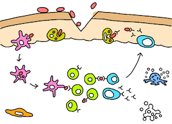

Opening
Every day, our cells produce many biomolecules, essential for themselves, other cells, and our survival.
Each cell has its own role; some make molecules for muscles, others produce antibodies against bacteria. Sometimes, cells get tired and need rest.
